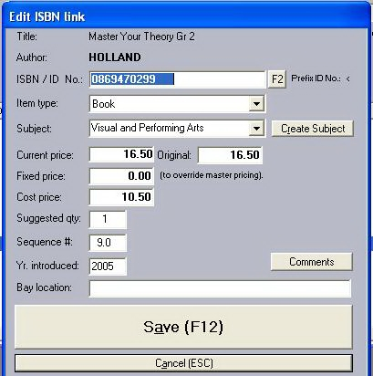

When this window first appears in Add mode, the only visible edit-control is the ISBN input. Once a valid ISBN has been entered (or if the window is in Edit mode), the other controls will appear.
The Item type can be either Book, Stationery, Levies or a Packing/postage charge. This helps categorise costs in the reports but is also important in determining which items are subject to the Textbook Rebate (a percentage-rate which can be set under System Options) or to any school discount (set individually for each school). Levies and Packing are exempted from both. Stationery does not attract the government's Textbook Rebate. Second-hand books avoid the school discount.
The current master price will be used throughout the pre-pack system unless you enter a value in the Fixed price field. Items with a fixed price will not be subject to either school discounts or fluctuations in the master price. The Original field will display the master price that was current when the booklist was set up.

The Yr. Introduced can be shown through the school's book-list report-form. We supply two examples, the default one without this field and the other showing it.
The Bay Location input can be set at this point or later, during the ordering process. This is a free text entry to help the warehouse assign stocks and will be printed on a slip produced at the same time as Goods-Received-Notes.
Closing this window returns you to the Book-list Maintenance window.